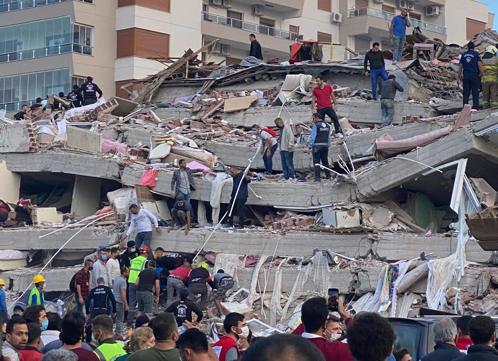

HOME MITIGATION PREPARATIONS RESPONSE RECOVERY SUMMARY
| The Philippines is considered an earthquake zone, where more than 30 earthquakes can take place in just one year. The strongest earthquakes in the Philippines was registered in 1976 with a 7.9 magnitude |  |